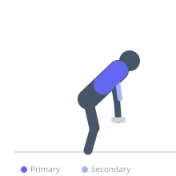

Exercise guide / Dead-Stop Dumbbell Row
Dead-Stop Dumbbell Row
The dead-stop dumbbell row involves lowering the dumbbell to the floor and coming to a complete pause before initiating the next repetition, eliminating all stretch reflex and momentum. This technique demands greater muscle activation at the initiation of each rep and is effective for building raw pulling strength and preventing the common tendency to bounce reps.
Primary muscles
latissimus dorsi
rhomboid major
Secondary muscles
biceps brachii
trapezius middle
Stabilizers
erector spinae
Equipment
Standard Barbell


Starting position
- Set up in a standard dumbbell row stance — one knee and hand on a bench, the dumbbell on the floor directly beneath the working shoulder.
Setup
- Use a hex dumbbell or place round dumbbells on plates so they rest stably on the floor. Ensure the bench is stable.
Steps
- Step 1: Lower the dumbbell fully to the floor from the previous rep or from the starting position.
- Step 2: Release grip pressure momentarily — the dumbbell is resting on the floor.
- Step 3: Re-grip the dumbbell firmly.
- Step 4: Drive the elbow up and back, rowing the dumbbell to the hip.
- Step 5: Lower under control to the floor and repeat.
Coaching cues
- Full stop on the floor — no bounce, no cheat
- Re-grip with intent before each rep
- Explode from the floor each time
Breathing
- Inhale during the pause on the floor. Exhale forcefully on the row.
Range of motion
- Full dead stop on floor to elbow above torso level.
Tempo
- 1s pause-1-1-2 (pause on floor, quick initiation, 2s lower)
Common mistakes
- Not actually pausing — touching and immediately lifting does not count as dead-stop
- Releasing spinal tension during the floor pause — maintain position throughout
Safety
- Keep the spine neutral during the pause — do not round or extend excessively
- Ensure the floor surface is flat and stable under the dumbbell
Training
- strength: 4–8 reps
- strength: 4–5 sets
- Rest: {'strength': 150}